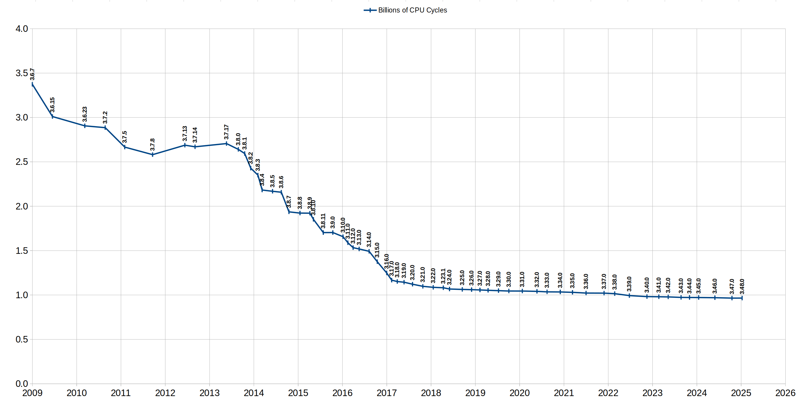

由WaterRun使用gpt-5.1-codex-mini翻译
小巧。快速。可靠。任选其三。
下方图表展示了在标准工作负载下，SQLite 在 3.6.1（2008-08-06）到 3.48.0（2025-01-14）版本之间（跨度约 16.4 年）所使用的 CPU 周期数。 在此期间，所使用的 CPU 周期数从大约 337.6 万下降到 96.5 万。因此到了 2025 年，SQLite 仅需 2008 年时约 29% 的 CPU 周期数。
本文描述了 SQLite 开发者如何测量 CPU 使用率、这些测量实际意味着什么，以及开发者在持续减少 SQLite 库 CPU 使用率过程中采用的技术。

简而言之，SQLite 的 CPU 性能测量方法如下：
在性能测量时，SQLite 的编译方式与在生产系统中使用时大致相同。所谓“近似”，是因为每一个生产环境都不尽相同。一个系统所使用的编译时选项不一定与其他系统一致。关键点是会避免那些显著影响生成机器代码的选项。例如省略 -DSQLITE_DEBUG，因为该选项会在性能关键的 SQLite 库代码段中插入成千上万个 assert() 语句。省略 -pg（在 GCC 中）是因为它会让编译器生成额外的概率性能测量代码，从而干扰实际性能测量。
为了性能测量，采用 -Os（以体积为目标的优化）而不是 -O2，因为 -O2 会导致过多代码移动，难以将具体的 CPU 指令和 C 源代码行对应起来。
“典型”工作负载由官方 SQLite 源码树中的 speedtest1.c 程序生成。该程序努力以真实世界应用的典型方式锻炼 SQLite 库。当然，每个应用都不同，因此没有任何测试程序可以完全复制所有应用的行为。
随着 SQLite 开发者对“典型”用法理解的演进，speedtest1.c 程序也会不时更新。
同样位于官方源码树中的 speed-check.sh shell 脚本用于运行 speedtest1.c 程序。要复制性能测量结果，请将以下文件收集到同一目录中：
然后运行 "sh speed-check.sh trunk"。
本文最初撰写于 2016-12-08。speed-check.sh 脚本已不再使用。自 2025 年初起改用名为 speedtest.tcl 的新脚本。详见 speedtest.md 文档。本文仍然引用旧的性能测量脚本，作为历史记录的一部分。
Cachegrind 被用来测量性能，因为它能够提供 7 位甚至更多有效数字的可重复答案。相比之下，实际（实时时钟）运行时间在超过一个有效数字后几乎无法重复。
cachegrind 的高可重复性让 SQLite 开发者能够实现并衡量“微观优化”。微观优化是指对代码做出的可以带来非常小性能提升的改动。典型的微观优化只会减少 0.1%、0.05% 甚至更少的 CPU 周期数。此类改进无法通过真实世界时序测量。但成百上千个微观优化累积起来，最终会带来可观的真实世界性能提升。
当 SQLite 开发者编辑 SQLite 源码时，他们会运行 speed-check.sh shell 脚本，以跟踪变更对性能的影响。该脚本会编译 speedtest1.c 程序，在 cachegrind 下运行它，使用 cg_anno.tcl TCL 脚本处理 cachegrind 输出，然后将结果保存到一系列文本文件中。 speed-check.sh 脚本的典型输出如下：
==8683== ==8683== I refs: 1,060,925,768 ==8683== I1 misses: 23,731,246 ==8683== LLi misses: 5,176 ==8683== I1 miss rate: 2.24% ==8683== LLi miss rate: 0.00% ==8683== ==8683== D refs: 557,686,925 (361,828,925 rd + 195,858,000 wr) ==8683== D1 misses: 5,067,063 ( 3,544,278 rd + 1,522,785 wr) ==8683== LLd misses: 57,958 ( 16,067 rd + 41,891 wr) ==8683== D1 miss rate: 0.9% ( 1.0% + 0.8% ) ==8683== LLd miss rate: 0.0% ( 0.0% + 0.0% ) ==8683== ==8683== LL refs: 28,798,309 ( 27,275,524 rd + 1,522,785 wr) ==8683== LL misses: 63,134 ( 21,243 rd + 41,891 wr) ==8683== LL miss rate: 0.0% ( 0.0% + 0.0% ) text data bss dec hex filename 523044 8240 1976 533260 8230c sqlite3.o 220507 1007870 7769352 sqlite3.c
输出中最重要的部分（开发者最关注的）以红色显示。基本上开发者想知道编译后的 SQLite 库大小以及运行性能测试所需的 CPU 周期数。
来自 cg_anno.tcl 脚本的输出展示了每行代码所消耗的 CPU 周期数。报告长度大约 80,000 行。以下是报告中部的简短片段，以示其样式：
. SQLITE_PRIVATE int sqlite3BtreeNext(BtCursor *pCur, int *pRes){
. MemPage *pPage;
. assert( cursorOwnsBtShared(pCur) );
. assert( pRes!=0 );
. assert( *pRes==0 || *pRes==1 );
. assert( pCur->skipNext==0 || pCur->eState!=CURSOR_VALID );
369,648 pCur->info.nSize = 0;
369,648 pCur->curFlags &= ~(BTCF_ValidNKey|BTCF_ValidOvfl);
369,648 *pRes = 0;
739,296 if( pCur->eState!=CURSOR_VALID ) return btreeNext(pCur, pRes);
1,473,580 pPage = pCur->apPage[pCur->iPage];
1,841,975 if( (++pCur->aiIdx[pCur->iPage])>=pPage->nCell ){
4,340 pCur->aiIdx[pCur->iPage]--;
5,593 return btreeNext(pCur, pRes);
. }
728,110 if( pPage->leaf ){
. return SQLITE_OK;
. }else{
3,117 return moveToLeftmost(pCur);
. }
721,876 }
左边的数字当然是那行代码的 CPU 周期计数。
cg_anno.tcl 脚本从默认的 cachegrind 注释输出中去除冗余细节，以便可以通过并排 diff 比较前后报告，查看某次微优化尝试是如何影响性能的。
采用标准化的 speedtest1.c 工作负载和 cachegrind 使大型性能改进成为可能。然而必须认识到此方法的局限性：
性能测量仅在单一编译器（gcc 5.4.0）、优化设置（-Os）以及单一平台（Ubuntu 16.04 LTS x64）上进行。其他编译器和处理器的性能可能不同。
正在测量的 speedtest1.c 工作负载试图代表 SQLite 的广泛典型用法。但每个应用都不同。speedtest1.c 工作负载可能并不是某些应用活动的良好代理。SQLite 开发者持续改进 speedtest1.c，使其更贴近真实 SQLite 使用，欢迎社区反馈。
cachegrind 提供的周期计数是实际性能的良好代理，但并非 100% 精确。
这里只测量 CPU 周期计数。CPU 周期计数是能量消耗的良好代理，但不一定与真实世界时长相关。执行 I/O 所花时间不会体现在 CPU 周期计数中，而在许多 SQLite 使用场景中，I/O 时间占主导。
CPU 周期计数在很大程度上取决于所用的编译器，并在一定程度上受操作系统影响。上图中的所有测量均使用 GCC 5.4.0 在 Ubuntu 16.04 上完成。那台机器在 2025 年初被关闭，因此无法再用于额外测量。
我们本可以使用更新的编译器重新做图中展示的 61 项测量。（此更新在 2026 年初使用搭载 GCC 13.3.0 的 Linux Mint 2.22 录入。）不过那将是一项大量工作，却不会带来显著收益。大多数性能提升出现在 2013 至 2017 年，当时上述的微观优化技术首次被应用到 SQLite。图中清晰地显示出性能曲线在 2018 年左右趋于平缓。此后性能缓慢提升，但远不如之前那样剧烈。我们预计这一趋势会继续。
开发者仍然会定期测量性能，肯定是在每个版本发布时，也会在每次重大变更后进行。我们继续致力于让 SQLite 尽量少地使用 CPU 周期。不过预计不会出现显著的性能飞跃。请注意 SQLite 已经比文件系统快 35%。还能再快多少呢？
此页面最后更新于 2026-01-06 14:40:07Z